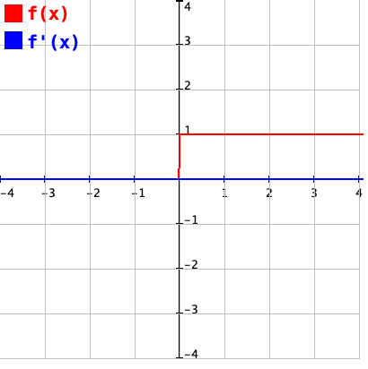

- All Implemented Interfaces:
Serializable,Comparable<Activation>,Constable
An activation function is also called a transfer function and maps a value x from a domain to exactly one value y from the codomain of the function. Activation functions can be categorised as either hard or soft limiters.
- Hard Limiters: Have a threshold value that results in a sudden state change
once the threshold is reached. For example, both the
STEPand Sign functions will switch between -1 / 0 and +1 once a threshold is reached. - Soft Limiters: Provide a more graduated and subtle change without any sudden
state changes. Soft limiters can be divided into linear and non-linear functions.
Example of linear functions include the
IDENTITYfunction. Common soft limiters include theSIGMOIDandTANHtransfer functions.
Each function will transform an input value n into a value between a minimum and maximum
value specific for that function. Each layer in a neural network can be configured with a
different activation function. A SIGMOID function is ideal for binary classification tasks
and TANH is a good choice as a general purpose transfer function. Functions from the
RELU family are often used for input and output layers.
Depending on the values used for input and activation function chosen, the input vector
to a neural network may have to be normalized (squashed). Functions such as SIGMOID
and TANH can saturate if applied to large or small values. This means that large
value will map to 1 and small values to 0 or -1 for SIGMOID and TANH
respectively. Both of these functions are optimal to changes around their midpoints,
0.5 for SIGMOID and 0.0 for TANH. Part of the design work for a neural
network is to determine the correct topology, activation function and degree of
normalisation required, if any. The utility class Aicme4jUtils contains methods for
squashing the training, testing and live data between the maximum and minimum values that
are applicable to a specific activation function.
An activation function must have a corresponding derivative function that can be used by the
backpropagation training algorithm. The derivative of a function is its slope and this is
used to compute the rate of change of the gradient descent during training. Not all activation
functions are differentiable. A differentiable function must be continuous, i.e. there must be
a continuous mapping of values from x to y with no discontinuities (gaps or
jumps). For example STEP and Sign functions contain jumps and do not have
derivatives, but have been configured below with the derivatives of TANH and SIGMOID
respectively to approximate a differentiable function.
The backpropagation training algorithm can suffer from a vanishing gradient or exploding
gradient problem. A vanishing gradient is a change to the gradient of a function that is
so small that it prevents a weight from changing its value, resulting in a neural network
that cannot be trained. An exploding gradient is a large error gradient that causes a
very large change to weights during training and will also result in the model being unable
to be trained. The RELU function is particularly prone to vanishing and exploding
gradients. From a practical point of view, this will result in overflow or underflow of the
double types used to store the weights and cause NaN exceptions.
Beginners should start by using SIGMOID for binary classifiers and the TANH
activation function for multi-class predictions.
Summary of Available Activation Functions
| Function Name | Graph | Equation | Derivative |
|---|---|---|---|
| Arctan | |||
| ELU |  |
 |
|
| Gaussian | |||
| Identity / Linear | |||
| ISRLU | |||
| ISRU | |||
| Log-Sigmoid | |||
| Leaky ReLU |  |
||
| ReLU | |||
| SELU | |||
| Sigmoid | |||
| Sinc | |||
| Softplus |  |
||
| Softsign | |||
| Step |  |  |
|
| Swish | |||
| Tanh | |||
| TanSig |
- Since:
- Aicme4j 1.0
- Author:
- Dr. John Healy, ATU.
-
Nested Class Summary
Nested classes/interfaces inherited from class java.lang.Enum
Enum.EnumDesc<E extends Enum<E>> -
Enum Constant Summary
Enum ConstantsEnum ConstantDescriptionInverse Tangent is an alternative to hyperbolic tangent and sigmoid that transforms n into a value in the range [−π/2..π/2]Exponential Linear Unit is faster to train than ReLU.A bell shaped curve useful for modeling Gaussian distributed random variables.The default activation for an input layer.An alternative to ELU (Exponential Linear Unit) that can be faster on some systems where am inverse square root can be computed more efficiently than an exponent.An alternative to tanh.Leaky Rectified Linear UnitThe default activation for an input layer.Log-Sigmoid transforms n into a value between -infinity and 0Rectified Linear Unit transforms n into a value into either 0 or nMultiplies the function by a scaling constant λ > 1 to ensure a slope greater than 1 for positive inputs.Sigmodial transforms n into a value between 0 and 1Cardinal Sine, similar to cosine function, n decreases relative to the distance from the origin.A smooth version of ReLU that transforms n into a value between from 0 to nAn alternative to hyperbolic tangent that transforms n into a value between -1 and 1Transforms n into either 0 or 1.An alternative to ReLU, Swish transforms n into a value between -0.5 and nHyperbolic Tangent transforms n into a value between -1 and 1Hyperbolic Tangent Sigmoid transforms n into a value between -1 and 1 -
Method Summary
Modifier and TypeMethodDescriptiondoubleapply(double val, boolean derivative) Returns the result of applying either the function or its derivative to val.Returns the long name of the activation function.voidinitialise(Optional<double[][]> matrix) Initialises the weights of each layer in the neural network depending on the type of activation function used.static ActivationReturns the enum constant of this class with the specified name.static Activation[]values()Returns an array containing the constants of this enum class, in the order they are declared.
-
Enum Constant Details
-
ARCTAN
Inverse Tangent is an alternative to hyperbolic tangent and sigmoid that transforms n into a value in the range [−π/2..π/2] -
ELU
Exponential Linear Unit is faster to train than ReLU. A required alpha parameter is set to 1. ELU transforms n into a value between -1 and n. -
SELU
Multiplies the function by a scaling constant λ > 1 to ensure a slope greater than 1 for positive inputs. The default value for λ and α are 1.0507 and 1.67326 respectively. -
GAUSSIAN
A bell shaped curve useful for modeling Gaussian distributed random variables. The Gaussian is similar to a sigmoidal / logistic activation function but is slower to compute. -
ISRLU
An alternative to ELU (Exponential Linear Unit) that can be faster on some systems where am inverse square root can be computed more efficiently than an exponent. The default value of alpha is set to 1. -
ISRU
An alternative to tanh. ISRU can be more efficient than tanh and sigmoid when properly shifted and scaled. The default value of alpha is set to 1. -
LEAKY_RELU
Leaky Rectified Linear Unit -
LINEAR
The default activation for an input layer. The The derivative of the identity function is a constant and is independent of the input value. As the slope is constant, the identity function cannot be used with backpropagation training. -
IDENTITY
The default activation for an input layer. The The derivative of the identity function is a constant and is independent of the input value. As the slope is constant, the identity function cannot be used with backpropagation training. -
RELU
Rectified Linear Unit transforms n into a value into either 0 or n -
SIGMOID
Sigmodial transforms n into a value between 0 and 1 -
LOGSIG
Log-Sigmoid transforms n into a value between -infinity and 0 -
SINC
Cardinal Sine, similar to cosine function, n decreases relative to the distance from the origin. Transforms n into a value between -0.5 and 1. -
SOFTPLUS
A smooth version of ReLU that transforms n into a value between from 0 to n -
SOFTSIGN
An alternative to hyperbolic tangent that transforms n into a value between -1 and 1 -
STEP
Transforms n into either 0 or 1. The step function only supports a binary classification and cannot be used for a multi-class system. The step function is also not differentiable, as it has a slope of 0 everywhere except at 0. This means that STEP cannot be used with a backpropagation algorithm as it will not be able to apply the delta rule to update the weights. -
SWISH
An alternative to ReLU, Swish transforms n into a value between -0.5 and n -
TANH
Hyperbolic Tangent transforms n into a value between -1 and 1 -
TANSIG
Hyperbolic Tangent Sigmoid transforms n into a value between -1 and 1
-
-
Method Details
-
values
Returns an array containing the constants of this enum class, in the order they are declared.- Returns:
- an array containing the constants of this enum class, in the order they are declared
-
valueOf
Returns the enum constant of this class with the specified name. The string must match exactly an identifier used to declare an enum constant in this class. (Extraneous whitespace characters are not permitted.)- Parameters:
name- the name of the enum constant to be returned.- Returns:
- the enum constant with the specified name
- Throws:
IllegalArgumentException- if this enum class has no constant with the specified nameNullPointerException- if the argument is null
-
getFullName
Returns the long name of the activation function.- Returns:
- the full function name.
-
apply
public double apply(double val, boolean derivative) Returns the result of applying either the function or its derivative to val.- Parameters:
val- the weighted sum of the inputs to a node in a neural networkderivative- use the derivative of the function for backpropagation training.- Returns:
- the result of applying either the function or its derivative
-
initialise
Initialises the weights of each layer in the neural network depending on the type of activation function used. Sigmodial, Hyperbolic Tangent and related functions are initialised using the Xavier method. The weights of edges to nodes that use the Rectified Linear Unit and related transfer functions are initialised using the He method. Gaussian, Log-Sigmoid and other functions are initialised using values in the range of {-0.3...0.3].- Parameters:
matrix- the input matrix of double values to randomise
-